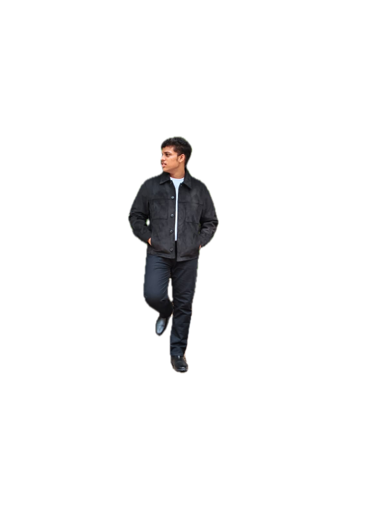

Web App
Web App
Open to Internships & Collaborations
Engineering the future
one commit at a time.
B.Tech student at Newton School of Technology — crafting clean systems by day, shredding guitar strings by night, and chasing horizons on two wheels at dawn.

Who I Am
More Than a Developer
A convergence of code, sport, music, and the open road.
Built on discipline. Driven by curiosity.
I'm Surya, a Computer Science undergraduate at Newton School of Technology, where I'm learning to build systems that are fast, meaningful, and lasting. But my story doesn't start or end at a laptop.
At the crease, reading a delivery before it leaves the bowler's hand taught me to think three steps ahead — the same foresight I bring to system architecture. The explosive reflex drilled into me through district-level badminton and competitive tennis translates directly into debugging under pressure. And every long-distance ride across state highways, with nothing but road and rhythm, is a masterclass in sustained focus, navigating uncertainty, and arriving at the destination no matter how long it takes.
When I pick up a guitar, I'm not playing notes — I'm structuring sound the way a good engineer structures logic: intentional, layered, and built for resonance. Every pull request, every sprint, every commit is fuelled by the same energy that drives me on and off the field.
Full-Stack Engineering
Open Source Contributor
Guitar & Music Theory
Long-Ride Adventurer
NST
Newton School of Technology
B.Tech in Computer Science
10+
Open Source PRs
Hacktoberfest & beyond
4×
Sports Arenas
Cricket · Badminton · Tennis · Skating Hockey
∞
Miles on the Road
Long rides, open skies & freedom
Open Source
Hacktoberfest & Contributions
Building in the open, shipping with purpose, and making the ecosystem stronger.
HF
10+
Pull Requests Merged
4
Repos Contributed
VYPR
Collaborative Team
✓
Completion Badge Earned
Code Reviews & PRs
Submitted well-structured pull requests with clean commit history, descriptive messages, and responsive iteration based on maintainer feedback.
Documentation & DX
Improved README files, contribution guides, and inline documentation — because great software deserves equally great documentation.
Team Collaboration
Worked within Team VYPR to co-ordinate efforts, share issue loads, and review each other's work — shipping more together than any of us could alone.
Technical Arsenal
Skills & Tech Stack
Languages, tools, and frameworks I reach for to get things built.
Frontend
Interfaces & Experiences
HTML5
CSS3
JavaScript
React
Tailwind CSS
Responsive Design
Backend
APIs & Data
Node.js
Express.js
Python
REST APIs
SQL / SQLite
MongoDB
Core CS
Foundations & Algorithms
C / C++
Data Structures
Algorithms
OOP Principles
OS Concepts
Networking Basics
Tools & Workflow
Dev environment
Git / GitHub
VS Code
Linux / Bash
Figma
Postman
Vercel / Netlify
Built Things
Featured Projects
Real applications, real problems, real code.
Web App
 CLI Tool
CLI Tool
 Algorithm
Algorithm
 Web App
Web App
Off the Keyboard
Beyond the Screen
The arenas that sharpened my focus, honed my resilience, and remind me every day that excellence is a habit — not an event.
Sports & Athletics
State Level
Cricket
Competing at state level demands reading the game before it unfolds — a discipline that maps precisely to anticipating edge cases and planning architecture three moves ahead.
StrategyPatienceTeam Play
District Level
Badminton
District-level competition where a millisecond of hesitation loses the point. That explosive reflex precision feeds directly into rapid debugging and split-second decision-making under deployment pressure.
ReflexesAgilityPrecision
Competitive
Tennis
A sport that punishes mental lapses as brutally as technical ones. Tennis taught me to reset after every lost point — exactly the mindset needed when a build breaks at 2 AM.
Mental GritEnduranceAdaptability
Competitive
Skating Hockey
Skating hockey at speed teaches split-field awareness and dynamic team synchronisation. Navigating defensive formations directly mirrors orchestrating microservices under load.
SpeedCoordinationTeamwork
Creative & Lifestyle Passions
Guitar — Acoustic & Electric
Music is structured creativity. Every chord progression is a loop, every solo a recursive function. Playing guitar cultivates the patience to iterate until something resonates — in sound and in software.
RhythmStructureCreative Flow
Long-Distance Riding & Road Trips
Five hundred kilometres of highway doesn't care about your excuses. Long-distance riding demands complete focus, fluid risk assessment, and the kind of endurance that doesn't switch off — exactly what sustained engineering sprints require.
EnduranceFocusFreedom
"Every boundary hit, every sustained note, and every kilometre ridden is a rep — and reps are how excellence is built."
Let's Talk
Get In Touch
Open to internships, open-source collaborations, project ideas, and long conversations about tech, sport, and roads.
Email
surya@example.com
GitHub
github.com/surya-dev
LinkedIn
linkedin.com/in/surya
Location
India · Remote-ready
Currently open to:
Internships · Open source projects · Hackathons · Collabs